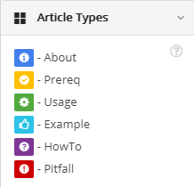

edc uses a molecular article-based writing system inspired from DITA XML.
The information is divided into the smallest possible chunks and sorted by type. The chunks are then assembled to form a coherent whole. This approach lets you reuse already written content as efficiently as possible and acts as a guide for new writers.

There are six default article types or topologies:
- About: general descriptive information
- Prerequisites: steps required before using an option or feature. These are most often used in UI bricks
- Usage: steps for carrying out a task, using a UI brick
- Example: results or steps. Can be avoided in contextualized help
- How to: not usage, extra tasks users want to carry out
- Pitfall: problems a user could encounter.
Drag and drop the articles into the text editor as needed. For bricks, you can use each type once, in the order they are presented. For documents, you can use each type as many times as needed, in any order.
You can create new article types as needed in Configuration > Content management > Topologies.